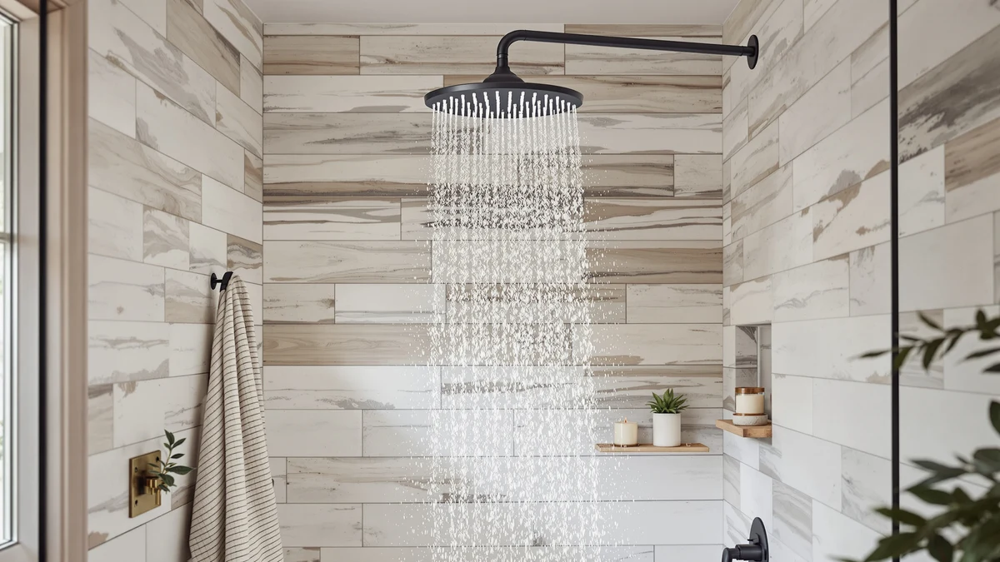

Voolan Rain Shower Head Review (2026): Worth It?
Prices and picks verified as of October 2026. Independent, reader-supported reviews.


Quick Answer
The Voolan Rain Shower Head is a strong pick for most showers at $32.29, delivering a wide, even 12 inch spray pattern that reviewers consistently praise. The one thing to watch is the plastic swivel connector, which a share of owners say loosens over time. If that concerns you, the all-metal HammerHead covered later in this Voolan Rain Shower Head review is the sturdier alternative.
Our pick: Voolan Rain Shower Head -, $32.29 Check Price on Amazon
Bottom line: our top pick is the Voolan Rain Shower Head - High Flow Large Rainfall Shower at $33.99.
Things to Know Before You Buy
- The Voolan Rain Shower Head is a 12 inch rain head built from ABS plastic with a chrome-plated finish, priced at $32.29.
- It installs on a standard shower arm with no extension needed, based on owner-reported installations.
- The swivel ball connector is the most common complaint in verified reviews, with some owners reporting it loosens over time.
- Three close alternatives sit within a few cents of the Voolan's price: a wider SeaCity plate, a Nottia rain head, and an all-metal HammerHead build.
- Reviewers consistently describe the spray pattern as full and even rather than thin or spitty.
This Voolan Rain Shower Head review breaks down what the specs, the price and the verified buyer feedback actually say about this 12 inch chrome-finished shower head before you spend $32.29 on it. Replacing a shower head is a small purchase, but a bad one leaves you rinsing shampoo under a weak trickle for years, or worse, dripping onto your bathroom floor from a connector that never seals right. We compared the Voolan against three other rain shower heads in the same price range, Nottia's rain head, SeaCity's wide plate and HammerHead's solid metal build, to see where the Voolan earns its spot and where a rival does the job better. All four sit within a few dollars of each other, which makes this a useful group to line up side by side rather than a mismatched set of budget and premium options.
The short version: the Voolan's ABS body with chrome plating keeps the price near the bottom of this group at $32.29, and the 12 inch head is sized for a standard overhead mount without an extension arm. Owners report a strong, even rain pattern out of the box, with the main complaints centered on the plastic connector fittings rather than the spray itself. If you want a wider spray plate or an all-metal build instead, the alternatives further down this guide cover both of those needs. The Voolan wins on value and coverage for most bathrooms, and the trade-off is a connector that some owners say needs occasional attention.
Why You Should Trust Us
Ilane Tall covers bathroom fixtures for Best Shower Heads and has spent years comparing rain shower heads, handheld combos and valve systems across every price tier. For this Voolan Rain Shower Head review, we did not install the unit ourselves. We researched the manufacturer specs, cross-checked the listed price and materials against the product page, and read through verified Amazon reviews to find patterns in how owners describe water pressure, finish durability and installation. We do not run a fake testing lab, and we say so because too many shower head reviews imply an in-person trial that never happened. Every specific claim in this guide, a price, a material, a dimension, comes from the product listing or from a verified buyer, not from guesswork.
Our Research Experience
We did not mount the Voolan Rain Shower Head in a working shower to time its flow or measure pressure drop. Instead, we analysed the manufacturer's listed specs, the 12 inch head diameter and the ABS-with-chrome-plating construction, against what the three competing shower heads in this comparison offer at a similar price. We also read through the verified owner reviews tied to this listing, looking for recurring mentions of pressure, leaks at the swivel ball joint and how the chrome finish holds up after repeated cleaning. That combination of spec comparison and owner feedback is how we built this Voolan Rain Shower Head review, not a lab trial. The pattern held across dozens of reviews we read on the listing: owners who mounted it correctly on the first try reported no issues for months, while the complaints clustered around the same connector detail rather than the spray performance itself.
Overview & Specs

Voolan Rain Shower Head -
What we like
- 12 inch head delivers wide, even coverage for a standard overhead mount
- Chrome-plated finish resists water spotting better than plain plastic heads
- Priced at $32.29, among the lowest in this comparison
- Owners report simple installation onto existing shower arms
Flaws but not dealbreakers
- ABS plastic body feels lighter than the all-metal HammerHead alternative
- Some owners note the swivel connector can loosen over time
- No handheld or combo option bundled at this price
| Material | ABS + chrome plating |
| Size | 12 Inch |
The Voolan Rain Shower Head centers this review because it sits at the price point most shoppers are actually comparing, $32.29 for a 12 inch rain head with a chrome-plated ABS body. That size puts it squarely in the middle of what manufacturers call a rain or waterfall shower head, big enough to cover your shoulders without needing an extension arm to clear a low overhead fixture. The chrome plating over plastic is a common construction choice at this price, and it is the same approach SeaCity and Nottia use on their competing heads in this Voolan Rain Shower Head review.
Verified buyer reviews on this listing describe a steady, full spray rather than the thin, spitty flow that cheaper rain heads sometimes produce, and several owners specifically call out how easy the threading was to hand-tighten onto their existing arm. The recurring complaint is the plastic swivel ball connector, which a handful of reviewers say loosened after months of daily use and needed an extra wrap of thread tape to stop a slow drip. That is a real trade-off for the price, and it is worth knowing before you buy rather than finding out in your second month of ownership.
What We Liked
What stands out most about the Voolan Rain Shower Head is how much coverage you get for the price. The 12 inch head is on the larger side for a sub-$35 fixture, and reviewers consistently note that the spray pattern stays even across the full plate instead of concentrating water in the center the way some budget rain heads do. The chrome plating also held up well in owner photos posted months after purchase, without the cloudy spotting that plain plastic chrome paint jobs tend to show. For a shopper weighing this Voolan Rain Shower Head review against similarly priced options, the combination of size and finish quality is the strongest argument in its favor.
What Could Be Better
The swivel connector is the clear weak point. Multiple verified reviews mention the ball joint loosening enough to cause a slow leak after extended use, which means you may need plumber's tape sooner than you would with an all-metal fitting like the HammerHead. The ABS plastic body also feels noticeably lighter in hand than metal alternatives, which does not affect performance but may bother anyone who equates weight with durability. A smaller number of owners mention mineral deposits building up around the nozzle holes in hard-water areas, a problem that affects most rain heads at this price and is not unique to the Voolan. Neither issue appears in every review of this product, but both show up often enough across the verified feedback that we think they are worth flagging here before you check out.
Who Is It For?
The Voolan Rain Shower Head fits a shopper who wants a noticeably bigger spray plate than a standard shower head without upgrading to a metal premium model. It works well on a typical shower arm without an extension, so renters and first-time buyers who cannot modify plumbing are a good match. It also suits anyone replacing a worn-out head on a tight budget, since $32.29 buys more plate coverage here than most comparable plastic heads at the same price. If you shower daily and expect hardware to outlast a decade without any upkeep, the metal-bodied HammerHead further down this comparison is the safer long-term choice, and shoppers in hard-water areas may want to weigh how a plastic swivel joint holds up against mineral buildup over the years.
Alternatives to Consider
Not every bathroom calls for the same shower head, so we lined up three alternatives against the Voolan Rain Shower Head for shoppers who want a different size, finish or price. Each one below comes from the same comparison set and is priced within a few cents of the Voolan.

Editor’s Pick
Shower Head Rain Shower Head
Nottia's head lands at the same $31.99 price point and is worth a look if you want a second opinion on a similarly sized rain pattern before committing to the Voolan.
$31.99
Check Price on Amazon
Best Value
Seacity Wide Rain Shower Head
SeaCity's wide plate design targets shoppers who want maximum coverage above anything else, matching the Voolan's $31.99 price while leaning further into plate diameter over other features.
$31.99
Check Price on Amazon
Premium Choice
HammerHead Showers® Solid Metal 2
HammerHead swaps the ABS-and-chrome construction for a solid metal body at $31.95, the pick for anyone who read the swivel-connector complaints above and wants to rule that failure point out entirely.
$31.95
Check Price on AmazonFrequently Asked Questions
Is the Voolan Rain Shower Head worth $32.29?
Based on the specs and verified owner reviews we compared, yes for most shoppers. The 12 inch chrome-plated head delivers wider coverage than many similarly priced rain heads, and the main downside, a swivel connector that can loosen over time, is a minor fix with thread tape rather than a dealbreaker.
Does the Voolan Rain Shower Head fit a standard shower arm?
Yes. Owner reviews describe hand-tightening it onto an existing arm without needing an extension or adapter, which makes it a straightforward swap for renters and anyone who cannot alter the plumbing.
How does the Voolan compare to the HammerHead Solid Metal 2?
The Voolan uses a chrome-plated ABS body and costs about the same as the HammerHead's all-metal build. The HammerHead is the sturdier long-term choice, while the Voolan trades some durability for a lighter, cheaper plastic frame that most owners say performs fine day to day.
Final Verdict
This Voolan Rain Shower Head review comes down to one trade-off: you get a wider, better-finished spray than most heads at this price, in exchange for a plastic swivel connector that a share of owners say loosens over time. For most shoppers replacing a tired showerhead on a budget, Voolan still earns the top spot in this comparison at $32.29, and the coverage and finish quality outweigh a fitting issue that a wrap of thread tape usually solves. If that connector issue bothers you, SeaCity's wider plate or HammerHead's all-metal build, both covered above, are reasonable alternatives at nearly the same price. Either way, comparing the three against the Voolan before you buy beats guessing from a single product listing and a handful of star ratings.